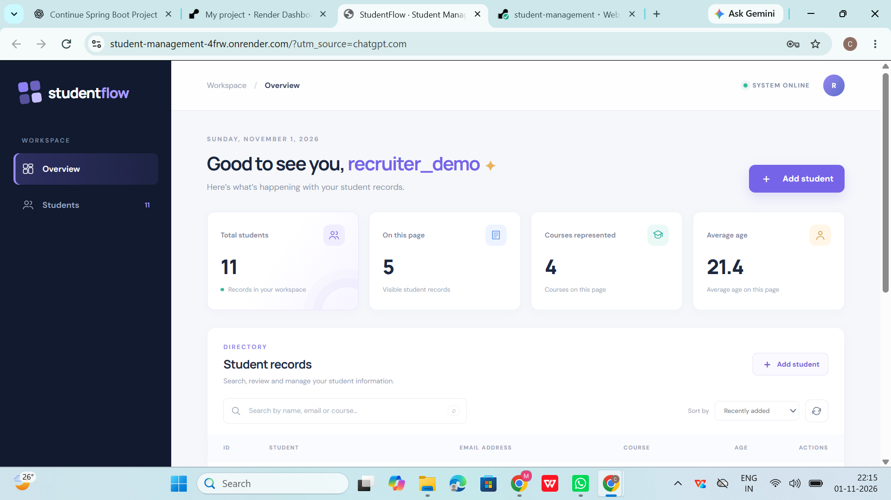
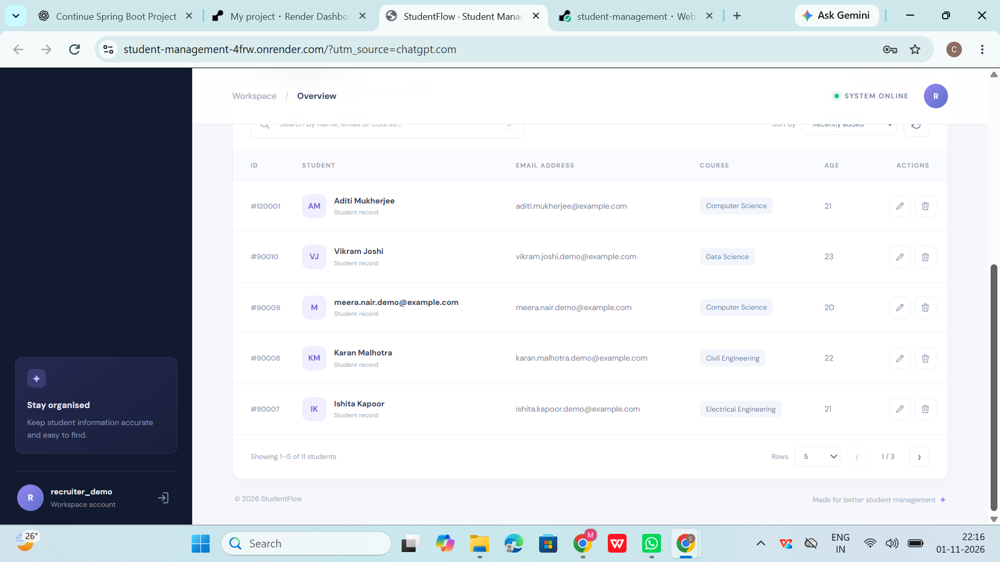
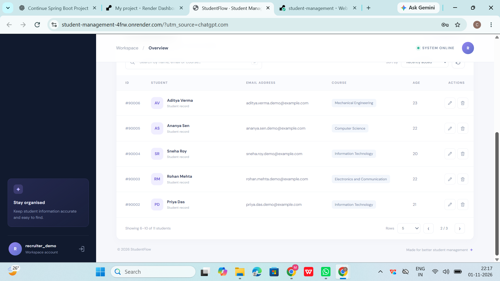
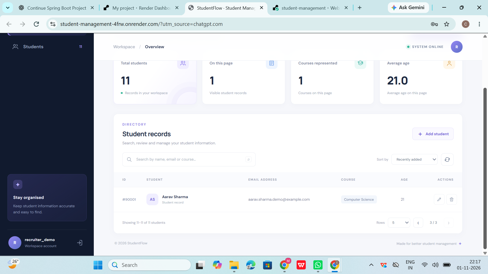
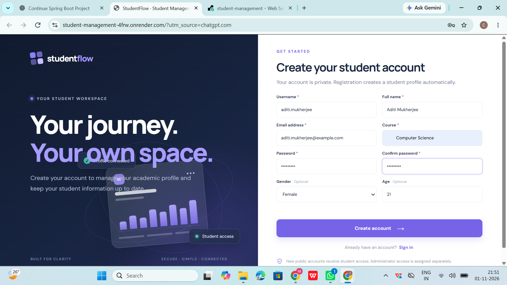
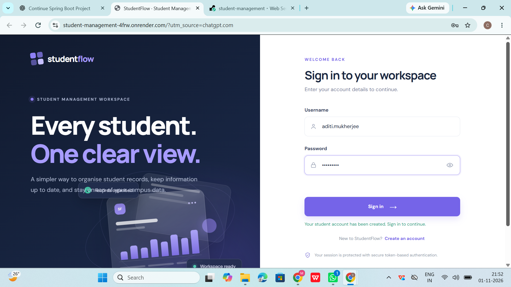
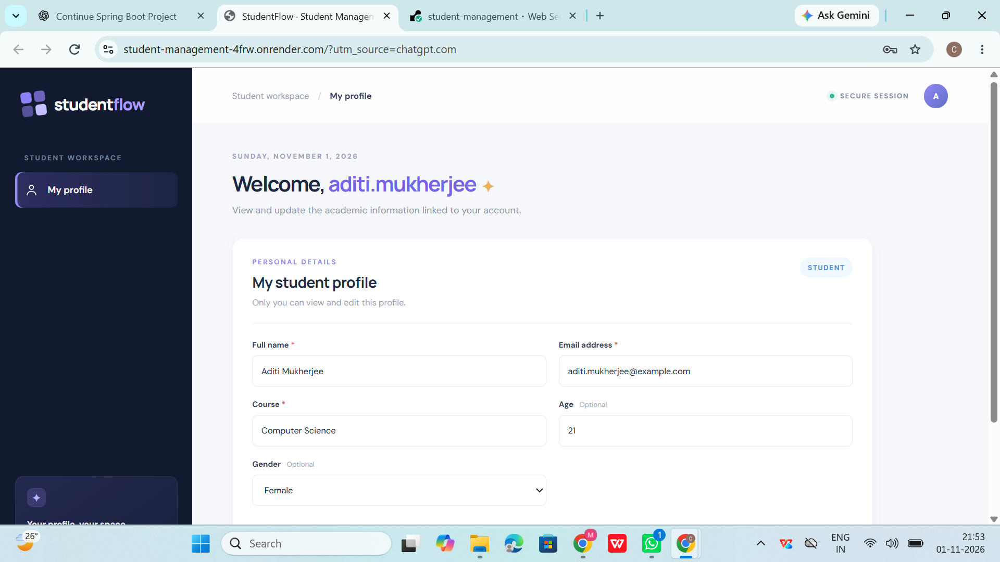
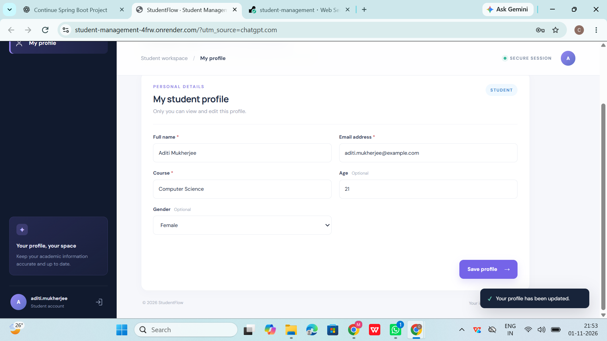

COMPUTER SCIENCE & ENGINEERING
Building useful things
with code & curiosity.
Hi, I'm Madhurima Ghosh — a CSE student interested in backend development, problem solving and creating practical applications.
developer.java⌘
01public class Developer {
02private String focus = "building";
03void create() {
04learn();
05build();
06improve();
07}
08}
☕ Java
✳ Spring Boot
▤ MySQL
curiosity → consistency → creation
A LITTLE ABOUT ME
Turning ideas into
working solutions.
I'm pursuing Computer Science and Engineering at KIIT University. I enjoy understanding how applications work behind the scenes and translating requirements into clear, reliable software.
My recent work has focused on Java and Spring Boot, REST APIs, authentication, database integration and building clean user interfaces. I also strengthen my foundations in object-oriented programming, DBMS, SQL and data structures and algorithms through coursework and regular practice.
EDUCATION2023 — 2027
B.Tech · Computer Science and Engineering
Kalinga Institute of Industrial Technology, Bhubaneswar
Current CGPA8.85 / 10.0
Higher Secondary · DAV Kapil Dev Public School, Ranchi88.8%
Secondary · Loreto Convent, Ranchi92.8%
01
Backend focused
Java, Spring Boot, APIs and relational data.
02
Learning by building
Hands-on projects that connect concepts to real workflows.
03
Always improving
Strengthening problem-solving and software fundamentals.
MY TOOLKIT
Technologies I work with.
A practical toolkit built through coursework, practice and project development.
Computer science
Backend & databases
Tools & frontend
WORKING STYLE
SELECTED WORK
Projects with a purpose.
S
YOUR WORKSPACEGood to see you ✦
TOTAL STUDENTS11ON THIS PAGE5COURSES4
STUDENTCOURSEAGE
ASAditi MukherjeeComputer Science21
VJVikram JoshiData Science23
MNMeera NairComputer Science20
FEATURED PROJECT
FULL-STACK WEB APPLICATION2026
StudentFlow
Student Management System
A role-based student management application built to organise student records and give students a secure space to view and update their own profiles.
✓ Admin dashboard & student records✓ Student registration, login & profile✓ JWT authentication & role-based access✓ CRUD, search, sorting & pagination
INSIDE STUDENTFLOW
Product screenshots.
Live production screens covering the admin workspace, all three directory pages and the complete student account journey. Select any image to view it at full size.

Admin overviewDashboard metrics and student workspace
Student directory · Page 1Student records with edit and delete actions
Student directory · Page 2Pagination across the student records
Student directory · Page 3Final record and the third pagination page
Student registrationAccount details and profile information
Registration successfulAccount created and ready to sign in
Student workspacePersonal profile for the STUDENT account
Profile updateStudent profile saved successfullyLEARNING & CREDENTIALS
Learning beyond the classroom.
G
COURSERA · PROFESSIONAL CERTIFICATE · JUNE 2026
Google Cybersecurity Professional Certificate
Completed the nine-course certificate series covering foundational cybersecurity concepts and practices.
U
UNESCO MGIEP · OCTOBER 2023
Climate Change: Understand, Reflect, Empathize and Act
Certificate in climate-change awareness, reflection and action.
U
UNESCO MGIEP · OCTOBER 2023
Biodiversity and Human Well-being
Certificate exploring the relationship between biodiversity and human well-being.
C
DECEMBER 2025
Corporate Governance, Corporate Responsibility & Tech Ethics
Coursework covering corporate governance, business for good, corporate responsibility and ethical decision-making in technology.
BEYOND THE SCREEN
Things I enjoy.
♫ Music🎨 Arts🏸 Badminton🍳 Cooking
HAVE A PROJECT OR OPPORTUNITY?
Let's build something
meaningful.
I'm interested in software development opportunities, internships and meaningful collaborations. The best way to reach me is by email.
ghoshmadhurima711@gmail.com